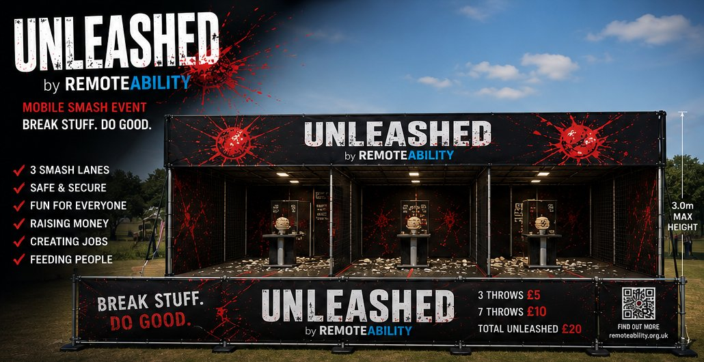

🏠 Housing & homelessness
Help navigating housing options, homelessness services and local authority support.
Whether you have a home or nowhere safe to stay, RemoteAbility is building a UK-wide network to help veterans navigate housing, wellbeing, benefits, employment and the journey into self-employment or business ownership.
Our existing support for disabled people, young people and disadvantaged communities continues alongside this new priority.


Remembering those who served and sacrificed. Standing alongside veterans and their families today.
We're developing coordinated support pathways, working alongside qualified organisations rather than claiming to provide every specialist service ourselves.
Help navigating housing options, homelessness services and local authority support.
Connection to qualified clinical providers, specialist counselling and peer support where available.
Assistance finding appropriate advice on benefits, veterans entitlements and financial hardship.
Practical preparation for employment, digital skills and routes into paid work.
Exploring business ideas, practical startup skills and links to experienced mentors.
Less isolation and more joined-up support through referrals, follow-up and local connections.
Service development notice: Our veterans network is being developed. Support depends on staffing, location and partner availability. RemoteAbility does not directly provide emergency accommodation or clinical treatment. If someone is in immediate danger, call 999.
RemoteAbility continues to support disabled and neurodivergent people, people facing homelessness or recovery challenges, youth and community skills initiatives, and employers looking to make a difference.
RemoteAbility CIC supports people who are too often passed between services with nowhere to land.
Urgent, active help to access emergency accommodation and safety.
Support to move towards settled housing and long-term stability.
Early support before a crisis becomes a housing emergency.
Support built around your health, energy and adjustments — not against them.
Clear, structured, judgment-free support that works with how you think.
Referrals, encouragement and coordination alongside your recovery.
Flexible, realistic routes towards work and independence, at your pace.
A proper support pathway, not a loose collection of services — moving from crisis to stability, from stability to opportunity, and from opportunity to sustainable independence.
Immediate contact and assessment, active housing support, and rehabilitation and specialist referrals for people in crisis.
Help with benefits, identification, digital access, daily routine, confidence and wellbeing as the immediate crisis eases.
Confidence-building, basic skills, and — for those who want it — our Six-Week Pathway to Independence Programme.
Accessible employment, freelancing, or a home-based business — with mentoring that continues after launch.
BREAK STUFF.
DO GOOD.
UNLEASHED is RemoteAbility's travelling mobile smash experience, bringing high-energy interactive entertainment to festivals, rallies, fairs, shows and communities across the UK. Every event helps RemoteAbility generate income, create opportunities and build projects that deliver real social impact.

Concept design — final build may vary
Same attraction. New challenges, themes and experiences throughout the year.
Every throw helps fund these four things.
We will ensure that nobody who comes to RemoteAbility has to navigate housing, recovery and employment services alone.
RemoteAbility does not provide emergency accommodation or clinical rehabilitation directly. We help people access the right services, complete referrals and applications, overcome barriers, and remain supported throughout their journey towards housing, recovery, work and independence.
Our first employer partners include Heimdell Tech AI and GreenFix Exterior Care, businesses founded by RemoteAbility's founder. We're actively looking for more employers to join them. Partner with us.